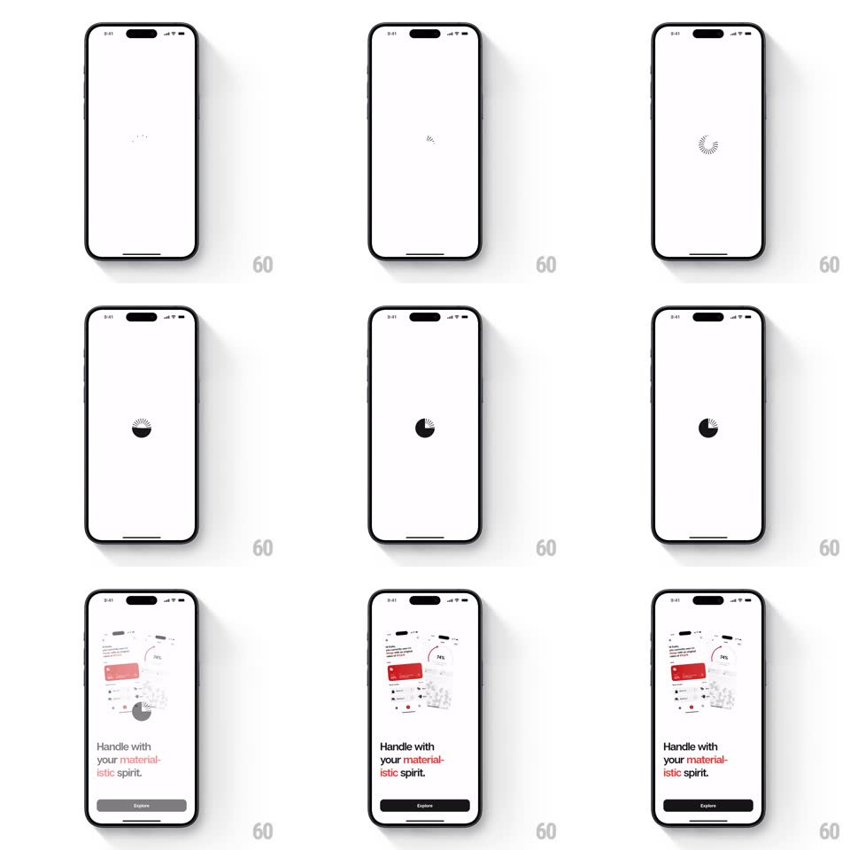

Media
Frame-by-frame

Rebuild this animation 1:1: Loowner's splash - a spinner gathers itself into the circular logo, which scales up to burst into the staggered onboarding screen.

Rebuild this animation 1:1: Loowner's splash - a spinner gathers itself into the circular logo, which scales up to burst into the staggered onboarding screen.
## Integration
Integration: stack-agnostic spec - springs given as stiffness/damping, timed motions as duration + curve; map every value to your framework and animation library of choice.
## Scene
A white screen. A tiny loading mark appears, becomes a radial dash spinner, then collapses into the solid black circular logo; the logo scales up until it fills and reveals the onboarding page: a floating collage of red-accented product cards over the headline "Handle with your material-istic spirit." and an Explore button.
## Motion spec
Pattern: loading-morph-to-logo reveal.
- Stage 1 (0-600ms): a faint dot pulses at center (opacity 0.2 to 0.6, 300ms x2).
- Stage 2 (600-1200ms): the dot becomes a spinner - 12 short dashes in a ring, rotating (1 rev per 900ms) with a tail-fade (each dash's opacity trails by position).
- Stage 3 (1200-1600ms): the dashes contract inward and merge into the solid black circle logo (radius shrinks, dashes thicken into the disc, 400ms, ease-in-out) with a small settle bounce (scale 1.05 to 1, spring ~400/24).
- Stage 4 (1600-2200ms): the logo scales up toward the viewer (scale 1 to 14, 600ms, ease-in) so its edge wipes the screen, crossfading mid-scale into the onboarding layout.
- Stage 5: onboarding content staggers in - card collage tiles drift down and rotate into place (translateY -20px, rotate +-4deg to 0, 400ms, staggered 70ms), headline lines slide up (translateY 14px, 250ms), and the Explore button fills from gray to black (250ms) to signal enabled.
## Calibration
- The whole sequence is under 2.5s; each stage must read as a distinct beat.
- The scale-up wipe hands off mid-motion: the onboarding content begins appearing while the logo is still growing.
## Reduced motion
Logo fades in, then crossfade to onboarding.
## Don't miss
- White field, black logo, red accents only inside the card collage - nothing else carries color.
- The headline's second line ("istic spirit.") is red; the rest is black.